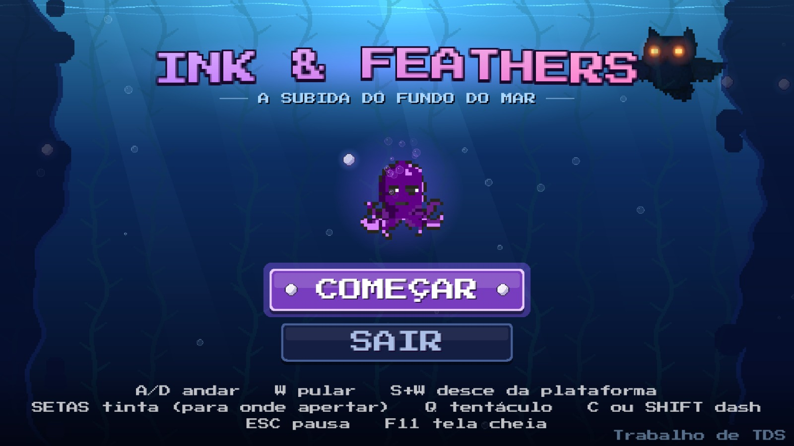

Uma seleção dos meus trabalhos mais recentes e relevantes.

Ink & ink-and-feathers
Ink & Feathers é um jogo de plataforma 2D em pixel art, feito no GameMaker. Você controla um polvo que sobe do fundo do mar, enfrentando inimigos, e no fim encara a Coruja-Rei no céu.